Java™ 10 Support
- The Eclipse compiler for Java (ECJ) implements the new Java 10 language enhancement which is the support for local variable type inference (JEP 286).
-
Addition of Java 10 JRE
- A Java 10 JRE is recognized by Eclipse for launching. It can be added from the Window > Preferences > Java > Installed JREs > Add... page.
It can be added from the Package Explorer as well using the project's context menu.

- An option to set compiler compliance to 10 on a Java project is provided.
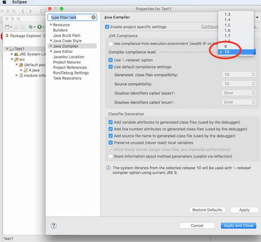
- A Java 10 JRE is recognized by Eclipse for launching. It can be added from the Window > Preferences > Java > Installed JREs > Add... page.
It can be added from the Package Explorer as well using the project's context menu.
-
Support for
varcompilation- Eclipse supports compilation of
varas shown below: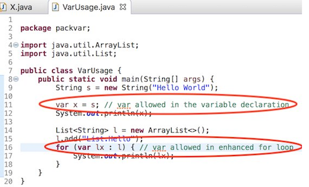
- When the type of
varcannot be inferred, it is flagged as a compiler error as expected. An example is shown below: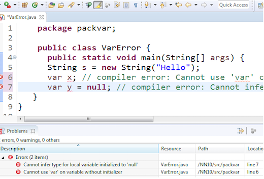
- Eclipse supports compilation of
-
Code Completion for
var- Code completion is offered at places where
varis allowed.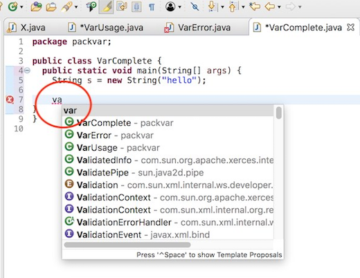
- Code completion of var is not offered at places where
varis not allowed.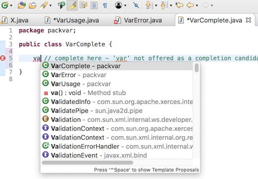
- Code completion is offered at places where
-
Hover over
varshows the javadoc of the inferred type.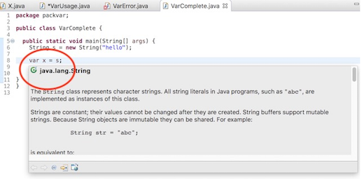
-
Quick Assist to convert from
varto the appropriate type is provided.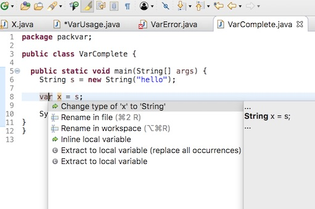
-
Quick Assist to convert from type to
varis provided.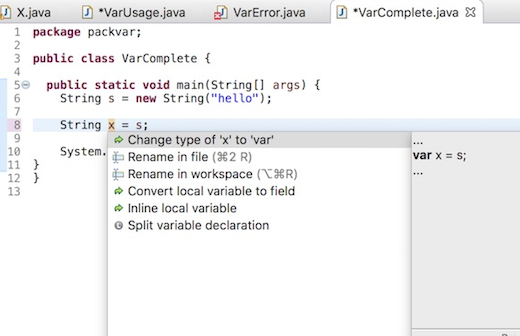
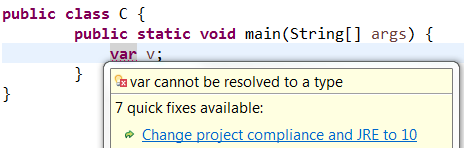
Java™ 9 Support
- The Eclipse compiler for Java (ECJ) implements all the new Java 9 language enhancements">language enhancements
- Updated significant features to support Java Modules, such as compiler, search and many editor features.
Note: It is not mandatory to run Eclipse with Java Runtime 9 to get the Java 9 support. However, a Java runtime 9 is required to be on a project's build path to compile a modular project against the system modules.
-
When a Java Runtime 9 is added to a project's build path, the system modules are listed under the System library in the package explorer:
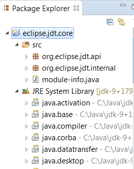
-
An existing non-modular Java project can be quickly converted to a module by creating a module-info.java for that project. This feature can be availed once the project has been moved to compliance 9:
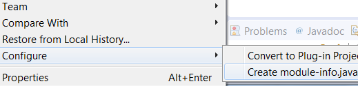
-
With Java 9 support, a library or a container can now be added to the module path as opposed to the classpath:
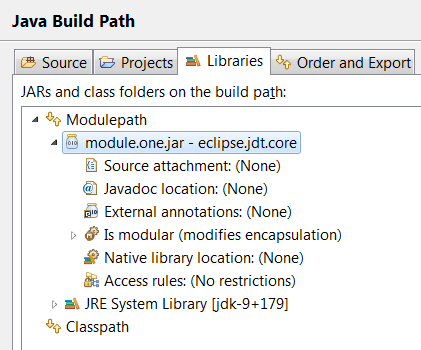
-
Once an entry has been added to a project's module path, its contents and encapsulation properties can further be modified by double-clicking on the Is modular node (or using the Edit button while Is modular is selected):
-
On the Contents tab individual modules inside a container like JRE System Library
can be included or excluded by moving the module from left-to-right or vice versa.
Modules shown in the lower right box are implicitly included, because they are required
by one or more modules in the upper right box.
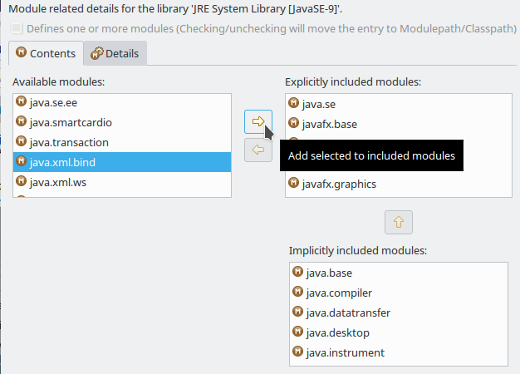
-
On the Details tab the encapsulation of given modules can be further influenced.
The following example shows how module
module.onecan be made to export one of its packages to the module of the current Java project: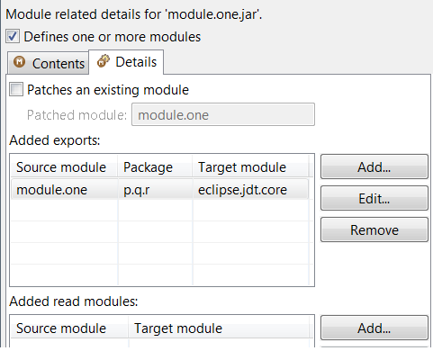
- Toggling Defines one or more modules (see above screenshot) lets you specify whether a given regular (non-modular) jar file or project should be considered as an "automatic module". As a consequence of changes here, the entry will move to the Modulepath or Classpath accordingly.
-
On the Contents tab individual modules inside a container like JRE System Library
can be included or excluded by moving the module from left-to-right or vice versa.
Modules shown in the lower right box are implicitly included, because they are required
by one or more modules in the upper right box.
-
Java search now includes a new search scope - Module:
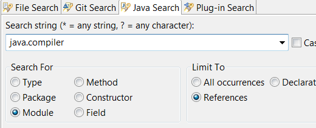
-
When a Java Runtime 9 is added to a project's build path, the launch configurations are created with "Dependencies" tab and not the old "Classpath" tab.
User can change the JRE of launch configuration and on the confirmation, the tab changes from "Classpath" to "Dependencies" or vice versa.
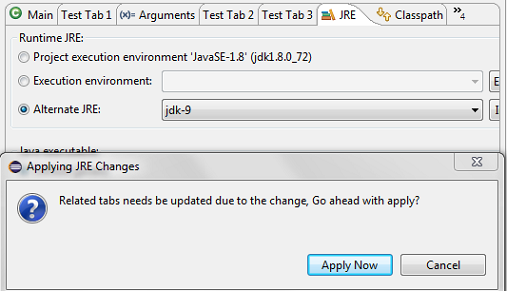
If Java project is modular and module is described in module_info.java, most of the dependencies will be defined in the Modular Entries.
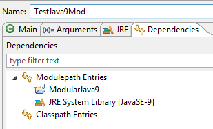
If Java project is not modular, most of the dependencies will be defined in the Classpath Entries.
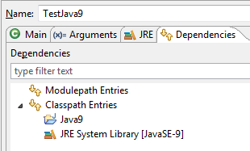
-
A new quick fix is offered on import statements to fix issues that are reported due to missing module dependency
This QuickFix is applicable if the project is a Java9 project and has a
module-info.java.The quick fix can be invoked from the editor:
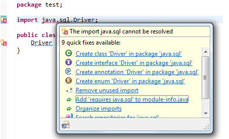
Before the quickFix is applied the module-info file looks as below
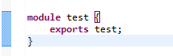
After the quickfix is invoked,
module-info.javawill be updated to includerequires 'MODULE_NAME'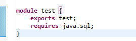
-
A new quick fix is available when you have an unresolved type in a Java file. If the unresolved type can be found in a java9 module, a quick fix will be available to add an import type entry to your file reporting the error and add the required module dependency to
module-info.javafile.This QuickFix is applicable if the project is a Java9 project and has a
module-info.javafile.The quick fix can be invoked from the editor:
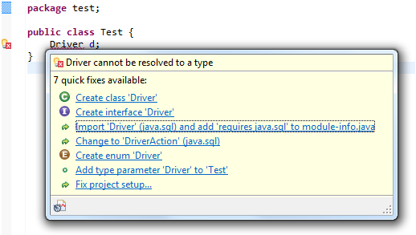
Before the quickFix is applied, the module-info file looks as below
After the quickfix is invoked,
module-info.javawill be updated to includerequires 'MODULE_NAME'After the quickFix is applied, the required
importstatement is added to the file reporting error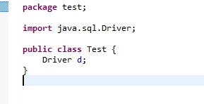
-
A new quick fix is available when you have an unresolved type on
service providerin a provides directive in module-info.java file. If the unresolved type can not be found in the current module, a quick fix will be available to create a new class or an interface in the current module.This QuickFix is applicable if the project is a Java9 project and has a
module-info.javafile.The quick fix can be invoked from the editor:

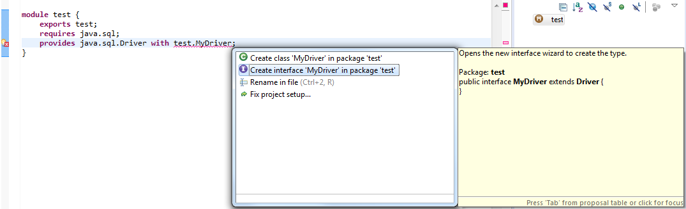
When the service is a class, the quick fix is proposed for creating a class.
When the service is an interface or an annotation, two quick fixes are proposed for creating a class or an interface.
--release on the Java compiler preference pageA new option --release is available on the Java compiler preference page.
This option will be enabled only if the JRE being used is a Java 9 or above.
Workspace Preference:

Project Preference:
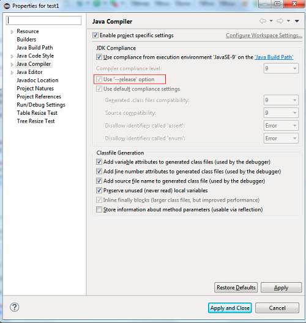
In the past, it was possible to compile for an older version of the Java language.
However, the compiler always compiled against the platform APIs that is found in the project's build path.
For Example: If the JRE being used is java 1.8 and the compliance level is set to 1.7, the API's that are available are from the Java8 library, even if they were not part of Java 1.7.
The new --release compiler option now allows the user to configure compilation against a platform API version of user's choice.
For Example: Using --release option if the JRE being used is 9 and the compliance level is set to 1.7, the API's that are available will be from JRE 1.7 even if JRE 1.7 is not available in your workspace.
The --release option supports versions 1.6 and above. That is the --release option is enabled for JRE 9 and above, if the compliance is set to 1.6 or above
In the below picture, compliance is set to 1.5, therefore the --release option is disabled.
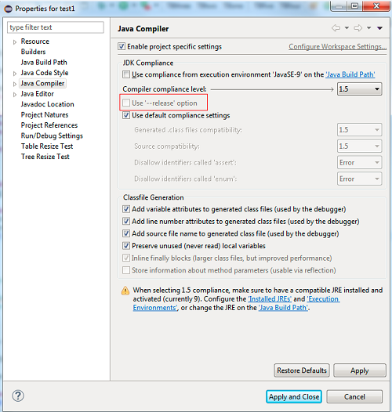
The --release option is enabled by default for all new projects created using JRE 9 or above.
--release option for Default Access rules and EE descriptorJava 9 onwards, Access rules intrinsic to JRE will not be available by default. Users must use the --release option to configure compilation against the version of Java library of his or her preference.
From Java 10 and beyond, API tools Execution Environment Descriptions will not be provided to determine if references are present in execution environment or not. Users must use the --release option to configure compilation against platform API of his or her preference. If the user intends to enforce a particular version of Java for determining Java API references in a project, he or she can store this preference in the project settings.
import java.sql.Driver;
module hello {
exports org.example;
requires java.sql;
provides Driver with org.example.DriverImpl;
}
Then, select a source folder in a Java 9 project in the Package Explorer view and use Ctrl+V (Edit > Paste) to paste it.
This automatically creates a module-info.java file in the source folder with the copied content.
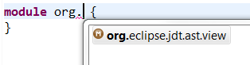
unresolved module on module name in requires directiveThis quick fix is applicable if the project is a Java 9 project and has a module-info.java file
This quick fix can be invoked from the editor.
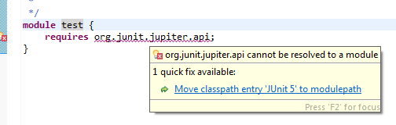
Before the quick fix is applied the classpath entries look as below:
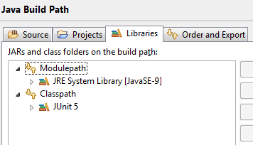
After the quick fix is applied the classpath entries look as below:
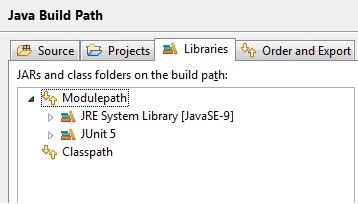
Non-existing or empty package on exports directiveA new quick fix is available when you have a non-existing or an empty package in an exports directive in module-info.java file.
This quick fix is applicable if the project is a Java9 project or above and has a module-info.java file.
The quick fix can be invoked from the editor:
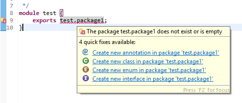
A quick fix is provided to create either a Class, or an Interface or an Annotation or an Enum in the given package.
If the package does not exist, a new package is created and the new element is created in the package.
module-info.java file on creation of a new Java9 Projectmodule-info.java file.
A new checkbox has been added in the Java Settings page (Page 2) of the New Java Project wizard. See images below.
Page 1:

The new checkbox for the creation of module-info.java file is checked by default.
When this checkbox is checked, upon project creation, the dialog for creation of a new module-info.java file will appear.

Selecting Don't Create in the above dialog does not create the module-info.java file, but creates the project.
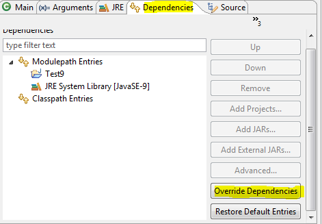
Dialog can be used to override modular dependencies: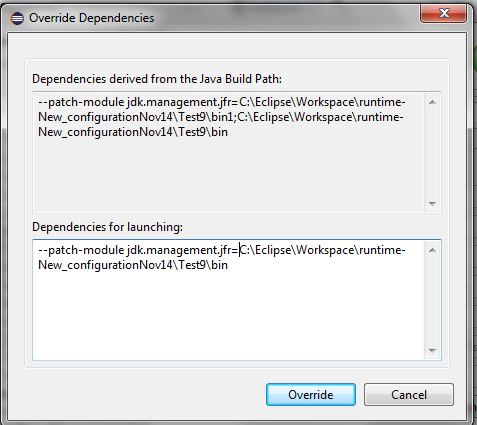
JUnit
-
Create a new JUnit Jupiter test via New JUnit Test Case wizard:
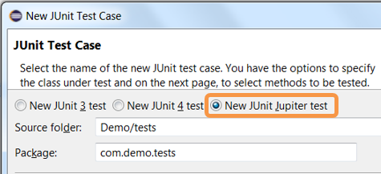
-
Add JUnit 5 library to the build path:
-
New JUnit Test Case wizard offers to add it while creating a new JUnit Jupiter test:
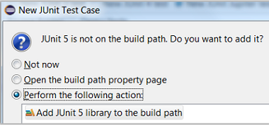
-
Quick Fix (Ctrl+1) proposal on
@Test,@TestFactory,@ParameterizedTestand@RepeatedTestannotations: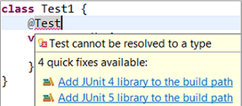
-
Add JUnit library in Java Build Path dialog:
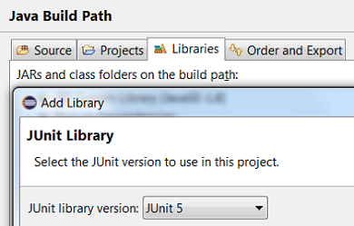
-
-
Create a JUnit Jupiter test method with the new test_jupiter template:
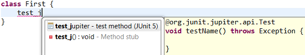
-
Create a
@TestFactorymethod with the new test_factory template: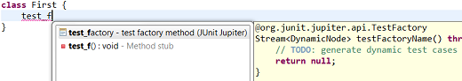
-
JUnit Jupiter’s
Assertions,Assumptions,DynamicContainerandDynamicTestclasses are now added to Eclipse Favorites by default: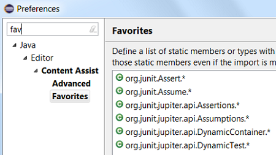
This allows you to quickly import the static methods from these classes in your code via Content Assist (Ctrl + Space) and Quick Fix (Ctrl + 1).
-
View all the failures from grouped assertions in the same Result Comparison dialog opened from JUnit view:
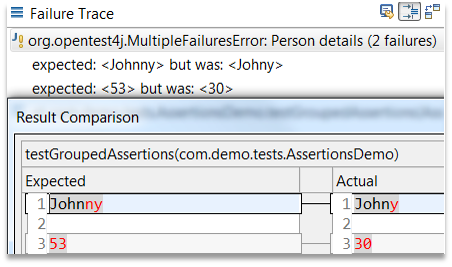
-
View the number of disabled tests and tests with assumption failures on hover in JUnit view:
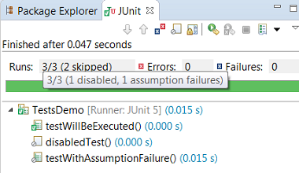
-
Use Go to File action or just double-click to navigate to the test from JUnit view even when the test is displayed with a custom name:
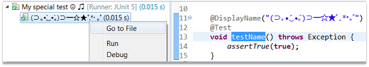
-
(Re-)Run a single
@Nestedtest class by using the Run action in JUnit view or Outline view. You can even right-click on a nested test class name in the editor and use the Run As action: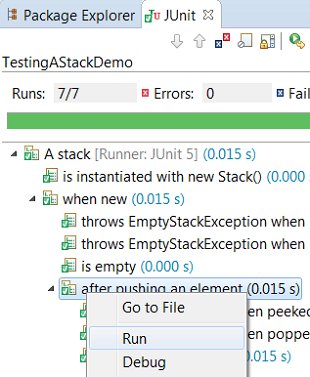
-
The Test Method Selection dialog in JUnit launch configuration now shows the method parameter types also:
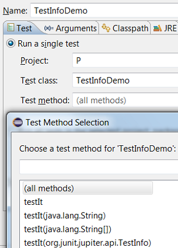
-
You can provide tags to be included in or excluded from a test run in the Configure Tags dialog of JUnit launch configuration:
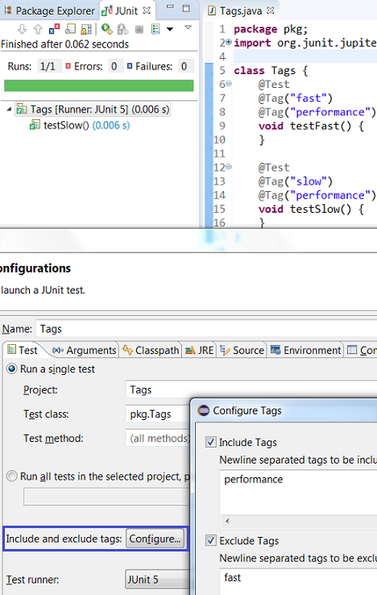
-
In JUnit Jupiter, a method parameter of type
TestReportercan be used to publish additional data about the current test run which can be viewed in the Console view:
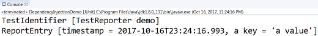
Note:
-
If you are using an Eclipse workspace where you were running your JUnit 5 tests via
@RunWith(JUnitPlatform.class)in Eclipse without JUnit 5 support then you will have JUnit 4 as the test runner in their launch configurations. Before executing these tests in Eclipse with JUnit 5 support, you should either change their test runner to JUnit 5 or delete them so that new launch configurations are created with JUnit 5 test runner while running the tests: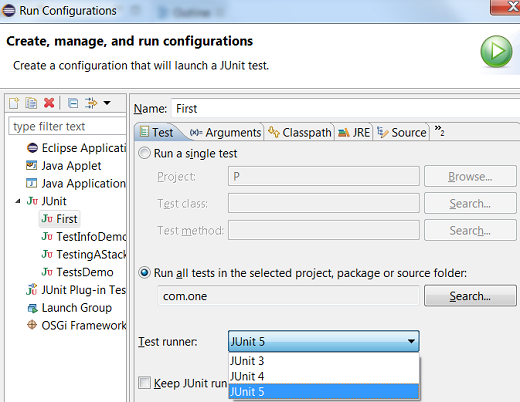
-
We do not support running tests in a setup where an old Eclipse build (not having JUnit 5 support) is using a new Eclipse build (having JUnit 5 support) as target. Also, developers who have
the JDT JUnit runtime bundles
(org.eclipse.jdt.junit.runtime, org.eclipse.jdt.junit4.runtime)checked out and pull the latest changes will run into the above issue. You are expected to use a new Eclipse build for the development.
Java Editor
@NonNullByDefault to packagesIf the package already has a package-info.java, the quick fix can be invoked from the editor:
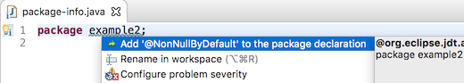
Otherwise, the quick fix must be invoked from the problems view, and will create a package-info.java with the required annotation:
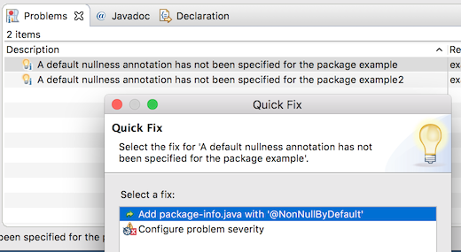
When invoked from the problems view, both variations of the quick fix can fix the problem for multiple packages simultaneously.
case or default
keywords to quickly navigate to the beginning of the switch statement.
Before:
After:
Before:
After:
Java Views and Dialogs
Test source folders and dependencies are shown with a darker icon in the build path settings, the package explorer and other locations. This can be disabled in Preferences > Java > Appearance:
Referenced projects can contain test sources and have test dependencies themselves. Usually, when test sources are compiled, the test code in projects on the build path will be visible. As this is not always desirable, it can be changed by setting the new build path attribute Without test code, that is available for projects, to Yes.
Build path entries configured like this have a decoration [without test code] after the project name,
which can be disabled in Preferences > General > Appearance > Label Decorations:
For each project, compilation is now done in two phases: First all main sources (which cannot see any test-code on the build-path) and then all test sources.
As a consequence, if the project is a modular Java 9 project, test dependencies like JUnit can not be referenced in
the module-info.java, as they will not be visible while compiling it.
The solution used to handle this is the same, that Maven uses: When test dependencies are put on the classpath, the module being compiled will automatically be configured to read the unnamed module during the compilation of the test sources, so the test dependencies will be visible.
Of course, code completion will not suggest test code in main sources:
There are now two dynamic Java working sets Java Main Sources and Java Test Sources containing the source folders grouped according to value of the Contains test sources attribute. This can for example be used to remove warnings in test sources from the problems view:
To achieve this, create a new filter that shows warnings for the Java Main Sources working set and select it with the All Errors on Workspace filter:
There are also dedicated filters to quickly remove hits in main code or test code from Java search results:
Similar, there is a filter to remove test code from Call hierarchies:
Another filter to remove test code exists for Quick type hierarchies:
Test source folders will be preselected in the New JUnit Test Case-Wizard
In Run and Debug configurations, the Classpath tab (or Dependencies tab when launching with Java 9) contains a new option Exclude Test Code, that is automatically preselected when launching a Java Application from a source folder that is not marked to contain test sources:
When launching with Java 9 and this option is not selected, command line options will automatically be added so modules that have a non-empty classpath read the unnamed module. These command line options are part of what can be overridden using the new Override Dependencies button.
| OFF | ON |
|---|---|
 |
The default for this preference is OFF.
Java Compiler
To invoke the regular expression search from the search field under Java Search, start the expression with "/r " i.e, a slash '/', the letter 'r' and a blank ' ' (not tab) followed by a regex, an example of which is shown below:
In the above example, all the characters trailing "/r " form a Java regular expression to denote a module name which starts with zero or more 'n's followed by the string ".ver" and followed again by zero or more number of arbitrary characters.
Another example would be to search for all modules that start with java.x followed by zero or more
characters which is given by the regular expression /r java\.x.* -
note the backslash for . to consider this as a "normal" character instead of the special regex].
Yet another example would be search for all module names that start with j followed by zero or more characters and ending with .xml which in regex language
translates to /r j.*\.xml. Please note that here the first '.' is the special regex character while the second '.' is
escaped to denote that this is a normal character.
@NonNullByDefault, the compiler will interpret this
as the global default for all types in this module:
@org.eclipse.jdt.annotation.NonNullByDefaultmodule my.nullsafe.mod { ...
Note, however, that this requires an annotation type declared either with target ElementType.MODULE,
or with no explicit target at all. Versions 2.2.0 and greater of bundle org.eclipse.jdt.annotation
use the latter strategy and hence support a module-wide non-null default.
@NonNull:
-
@NonNullByDefaultannotations based on enumDefaultLocationcan also be used if the primary nullness annotations are declaration annotations (previously this was supported only forTYPE_USEannotations). -
Support for
@NonNullByDefaultannotations that are targeted at parameters has been implemented. -
Multiple different
@NonNullByDefaultannotations (especially with different default values) may be placed at the same target, in which case the sets of affected locations are merged. -
Annotations which use a meta annotation
@TypeQualifierDefaultinstead of aDefaultLocation-based specification are now understood, too, e.g.@org.springframework.lang.NonNullApi.
org.eclipse.jdt.annotation
containing an annotation type NonNullByDefault that can be applied to parameter and
module declarations (in addition to the previously allowed targets).
This preference indicates the severity of the problem reported when project's used JRE does not match the compiler compliance level selected. (e.g. a project using JRE 1.8 as JRE System Library, and the compiler compliance is set to 1.7).
The value of this preference is by default WARNING.
If the JRE being used is 9 or above and the --release option is selected and even if the compiler compliance does not match the JRE being used, this option will be ignored.
This preference can be set as shown below:
Java Formatter
You can use filtering to display only the settings with names matching a specific phrase. Filtering by values is also possible (prefix a value filter with a tilde).
Most sections have a Modify all button in their header that lets you set all their preferences to the same value with one click.
Some preferences have more convenient controls. For example, number values can be easily modified with arrow buttons. Wrap policy settings are controlled by simple toolbars so that you can see and compare multiple policies at once.
In the preview panel you can now use your own code to immediately see how it will be affected by the modified settings. You can also see the raw form of standard preview samples and make temporary modifications to them.
For example, the Align descriptions, grouped by type setting is now used in the built-in Eclipse profile.
The setting previously known as Indent Javadoc tags is now called Align descriptions to tag width. The two settings related to @param tags also had their labels changed to better describe what they do.
- Interface field declarations:
public,static,final - Interface method declarations:
public,abstract - Nested interfaces:
static - Method declarations in final classes:
final
Debug


New org.eclipse.jdt.launching.workspaceProjectDescribers extension point can be used to enable advanced source lookup for projects with non-default layout, like PDE Plug-In projects.
New org.eclipse.jdt.launching.sourceContainerResolvers can be used to download sources jar files from remote artifact repositories, like Maven Central or Eclipse P2.
Advanced source lookup affects debug launches only and can be enabled or disabled with Java > Debug > Enable advanced source lookup preference option:
Technically speaking, Java debugger automatically adds a new (user invisible) breakpoint in the JVM and notifies clients (like Debug view) on a breakpoint hit. If this behavior is undesired for some reason, product owners can disable it via product customization.
The property value is:
org.eclipse.jdt.debug.ui/org.eclipse.jdt.debug.ui.javaDebug.ListenOnThreadNameChanges=false
Similarly, when an exception breakpoint is hit, the exception being thrown is shown.
JDT Developers
IBinding#getJavaElement() now
accommodates recovered packages in which case a null may be
returned for such package bindings with problems. Pre-Java 9 compliant code
will continue to have a non-null return value for this API for packages.
SearchPattern#createPattern(String , int , int , int ) is enhanced for
supporting regular expression search for module declarations. Please note that the flag
SearchPattern#R_REGEXP_MATCH used for regular expression search is applicable exclusively for
module declarations. No other flag (for eg.SearchPattern#R_CASE_SENSITIVE) should be used in
disjunction with this match rule.